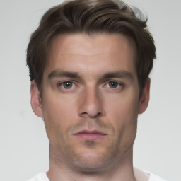
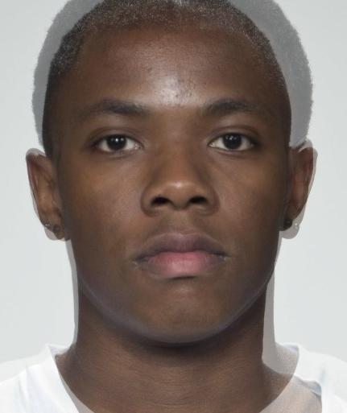
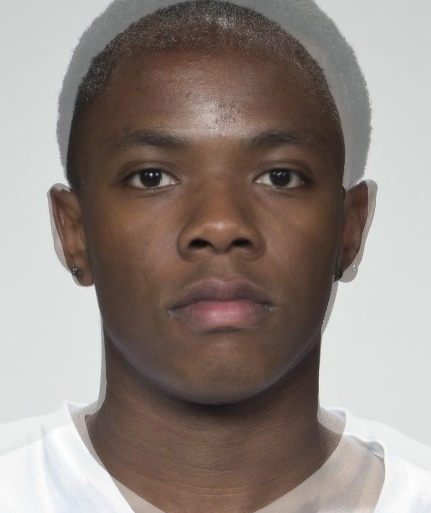
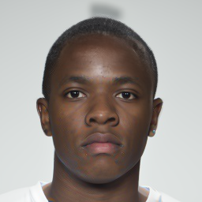
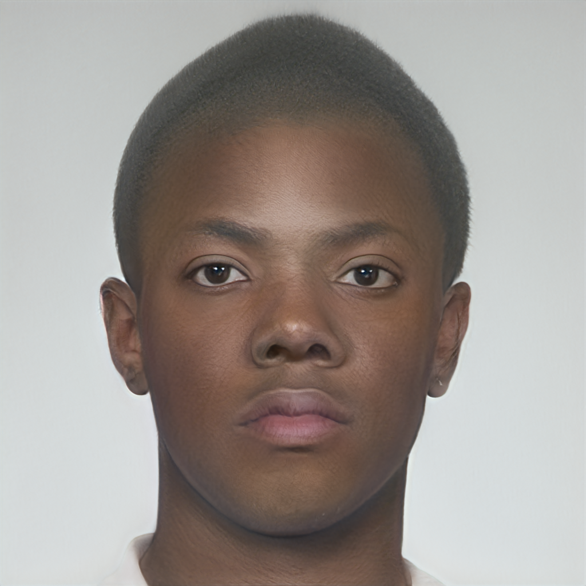
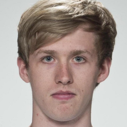
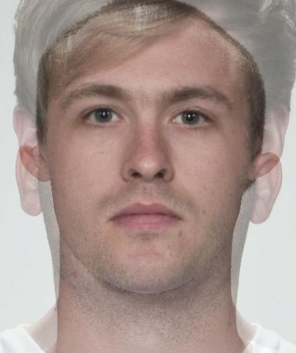
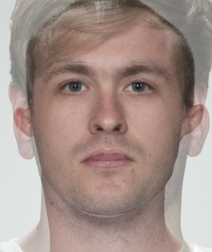
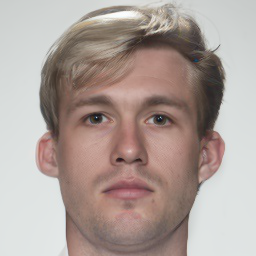
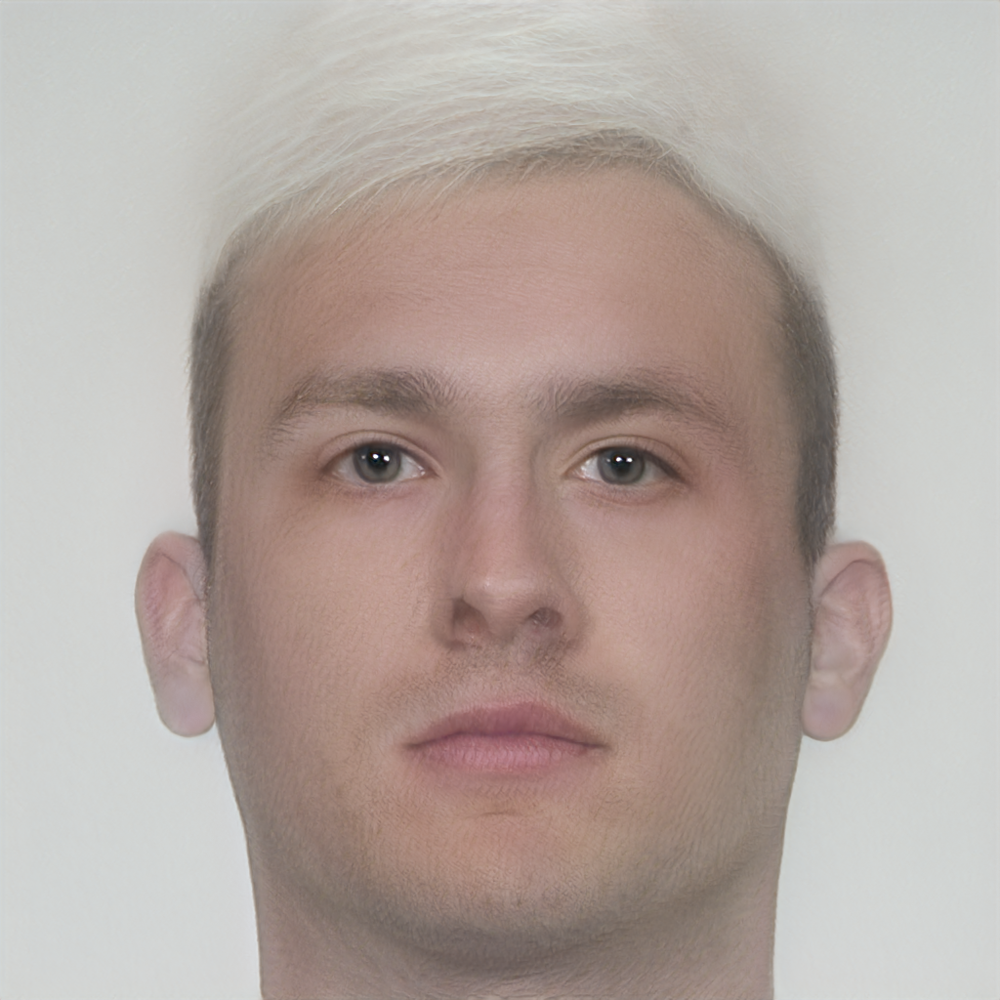

Face morphing attacks seek to deceive a face recognition system by presenting a single image which carries the biometric qualities of two different identities, posing a significant threat to biometric systems. We present Diffusion Morphs (DiM), a morphing attack which uses a diffusion-based architecture to improve the visual fidelity of the morphed image and its ability to represent characteristics from both identities. We measure the visual fidelity of the proposed attack via Fréchet Inception Distance (FID) and benchmark the vulnerability of state-of-the-art FR systems against DiM and existing landmark- and GAN-based attacks; additionally, we introduce a novel metric to measure the relative strength between different morphing attacks. Our follow-up work, Fast‑DiM, examines the ODE solvers driving the probability flow ODE and proposes a faster DiM pipeline which reduces network function evaluations by up to 85% in encoding with only 1.6% reduction in Mated Morph Presentation Match Rate (MMPMR), and halves sampling cost with at most 0.23% MMPMR loss.

γ0.50 paper frameA face morphing attack produces a single image that a face recognition (FR) system accepts as a match for two different identities — breaking the bedrock biometric assumption that one face corresponds to one person. The threat is concrete: in many countries a passport photo is submitted by the applicant and enrolled directly, and a morph slipped through the application step quietly authorizes two different travelers to use that document.
Landmark‑based morphs. The original recipe aligns facial keypoints, warps the two faces to a shared geometry, and averages them pixel‑wise. Such morphs fool FR systems but produce visible artefactsGhosting around the hair and ears, doubled eyebrows, blurred pupils. Humans and trained detectors easily spot them. which are easily distinguishable from real faces.
GAN‑based morphs. StyleGAN2 and MIPGAN‑II invert each face into a learned latent code, average these codes, and decode the average back into image space. The output is more realistic; however, two well‑known caveats apply: the inversion is lossyBackground and hair on a GAN morph are often a different person's — the encoder cannot losslessly project an arbitrary face into the learned manifold., and there is a fundamental editability–fidelity tension in GAN inversions. In particular, the morph either resembles the bona fides or fools the recognizer — rarely both.
A useful morph must satisfy three things at once: (a) the FR system matches it to both source identities, (b) a human or learned detector cannot easily flag it, and (c) it does not collapse onto a low-fidelity GAN manifold. Every prior method gives up at least one.
Recall that diffusion models dominate GANs on photorealism and, moreover, admit a clean encoding through the probability‑flow ODE: any image is deterministically pushed to noise and back without a learned encoder bottleneck.A consequence of the bijective nature of ODEs. N.B., numerical schemes do not preserve this exactly unless they are algebraically reversible. We turn that property into a face morphing attack — DiM — which beats every prior method on visual fidelity and attack strength simultaneously.
A diffusion autoencoder represents a face by two complementary latents: a semantic code $\boldsymbol z = E(\boldsymbol x_0)$, which is compact, learned, and captures identity; and a stochastic code $\boldsymbol x_T$, which is high‑dimensional and captures the rest — texture, hair strands, lighting. The reverse process $\boldsymbol x_T \!\to\! \boldsymbol x_0$ is conditioned on $\boldsymbol z$ and is fully deterministic: solving the probability‑flow ODE forward returns the noise code, and solving it backward returns the image.
For morphing, we encode both bona fides this way and produce a morphed pair $(\boldsymbol z_{ab}, \boldsymbol x_T^{ab})$ by interpolation; then we decode that interpolated pair exactly the same way we would decode any single face.No retraining, no inversion loss, no special "morph head" — the same network that synthesizes single faces produces the morphs. The result is a real‑looking image which lives on the data manifold, rather than outside of it.
The DiM architecture · one cycle = one morph
Two bona fides encode in parallel to twin latents $(\boldsymbol z_i, \boldsymbol x_T^{(i)})$. The semantic codes meet at a linear interpolation; the stochastic codes, on the other hand, meet at a spherical one. A conditional reverse PF‑ODE then decodes the interpolated pair into the morph.
Notably, the choice of slerp over lerp on the noise code is not cosmetic. Lerp would shrink the norm of the interpolated noise away from $\sqrt{d}$, putting it off the noise manifold the model was trained on and visibly degrading the output. Slerp, on the other hand, keeps the magnitude on‑manifold.
Recall that a diffusion model defines a forward stochastic process which gradually adds Gaussian noise to a sample. showed that it admits a deterministic counterpart — the probability‑flow ODE — whose trajectories preserve the same time‑marginal distributions whilst evolving a single state, rather than a random one. Symbolically:
Because the probability‑flow ODE is an ODE rather than an SDE, the map $\boldsymbol x_0 \!\to\! \boldsymbol x_T$ is bijective: any image is deterministically encoded to noise and decoded back.Up to a discretization error; cf.. There is no learned encoder, no inversion loss, no manifold clipping — we recover a faithful encoding by running the same network in reverse. This is the structural advantage over GAN morphs, in which inversion is lossy by construction.
The semantic code $\boldsymbol z$ is well‑behaved under linear interpolation, as it lives in a Euclidean embedding learned for precisely that. The stochastic code $\boldsymbol x_T$, however, encodes high‑frequency detail which depends sensitively on the input geometry. In particular, if the two source faces are misaligned, then $\boldsymbol x_T^{(a)}$ and $\boldsymbol x_T^{(b)}$ point in very different directions, and even slerp cannot paper over the mismatch.
To address this issue, DiM‑C pre‑morphs the two source images with a pixel‑wise average before encoding. This pulls $\boldsymbol x_T^{(a)}$ and $\boldsymbol x_T^{(b)}$ closer together; consequently, the interpolated noise is better behaved — fewer artefacts, lower FID.DiM‑A (no pre‑morph) remains the strongest attack; DiM‑C, on the other hand, produces the most natural‑looking morphs. The two variants sit at different points on an attack‑strength / visual‑fidelity trade‑off.
Two metrics govern face morphing. FID measures how close the morph distribution is to the real face distribution — lower is more photorealistic. MMPMR (Mated Morph Presentation Match Rate) measures the fraction of morphs the FR system accepts as both source identities — higher is a stronger attack. Most prior methods trade one against the other; DiM, notably, does not.
| Attack | FRLL | FRGC | FERET |
|---|---|---|---|
| StyleGAN2 | 45.19 | 86.41 | 41.91 |
| FaceMorpher (landmark) | 91.97 | 88.14 | 79.58 |
| OpenCV (landmark) | 85.71 | 100.02 | 91.94 |
| MIPGAN-II | 66.41 | 115.96 | 70.88 |
| DiM (ours) | 42.63 | 64.16 | 50.45 |
Table 1. DiM attains the lowest FID on FRLL and FRGC, and is competitive with StyleGAN2 on FERET. Landmark methods lag far behind on every dataset; notably, MIPGAN‑II's FID is much higher than DiM's despite being the strongest GAN attack on FR systems — a hint at the editability–fidelity trade‑off.
The chart below reports MMPMR at $\mathrm{FMR}=0.1\%$ for five attacks across three FR systems and three datasets; toggle the FR system and dataset to walk the matrix. DiM reaches 88.09% against ArcFace on FRLL — the next‑best attack on that cell is MIPGAN‑II at 56.52%, and the strongest landmark attack tops out at 47.70%. Notably, the most accurate FR system is also the most vulnerable.
Figure 3. MMPMR @ $\mathrm{FMR}=0.1\%$ across five attacks. DiM (deep blue) leads or ties the strongest GAN attack in nearly every cell; in particular, the margin grows on the modern margin‑based recognizer (ArcFace). Numbers from DiM Tables III & IV (Blasingame & Liu, TBIOM 2024).
Two FRLL identity pairs through six morphing pipelines. Landmark and GAN methods leave characteristic artefacts; DiM, notably, does not.

FaceMorpher
OpenCV
DiM
MIPGAN-II
Bona fide
FaceMorpher
OpenCV
DiM
MIPGAN-IIAggregating across the full 3×3 matrix of FR systems and datasets, DiM's geometric‑mean MMPMR (19.80) beats MIPGAN‑II (14.16) by 40% and StyleGAN2 (2.15) by an order of magnitude. In particular, the gap is widest on ArcFace — the modern margin‑based recognizer which landmark‑era attacks were never tuned against. The same tight angular margin which makes ArcFace confident on bona fides is what renders it vulnerable here: the average of two identity embeddings lands inside both decision boundaries, and a high‑fidelity diffusion decode keeps the morph close to both source embeddings in feature space.
A morphing attack is multi‑objective: it must fool every recognizer, look photoreal, and resist a learned detector. The radar below collapses these axes into one shape per attack. We observe that DiM's polygon is the largest on FRLL and remains the largest or near‑largest as the dataset changes — toggle between the three to see which axes each attack wins.
| Attack | Dataset | ArcFace MMPMR | VGGFace2 MMPMR | FaceNet MMPMR | FID ↓ | Evasion |
|---|---|---|---|---|---|---|
| StyleGAN2 | FRLL | 19.89 | 6.05 | 4.69 | 45.19 | 0.42 |
| FaceMorpher | FRLL | 45.03 | 36.40 | 11.26 | 91.97 | 0.30 |
| OpenCV | FRLL | 47.70 | 40.93 | 17.34 | 85.71 | 0.30 |
| MIPGAN-II | FRLL | 56.52 | 26.74 | 30.96 | 66.41 | 0.55 |
| DiM (ours) | FRLL | 88.09 | 35.37 | 28.14 | 42.63 | 1.00 |
| StyleGAN2 | FRGC | 5.49 | 0.85 | 0.18 | 86.41 | 0.42 |
| FaceMorpher | FRGC | 41.28 | 9.15 | 0.51 | 88.14 | 0.30 |
| OpenCV | FRGC | 3.99 | 12.16 | 0.14 | 100.02 | 0.30 |
| MIPGAN-II | FRGC | 33.54 | 7.94 | 3.12 | 115.96 | 0.55 |
| DiM (ours) | FRGC | 46.74 | 8.47 | 2.68 | 64.16 | 1.00 |
| StyleGAN2 | FERET | 4.95 | 0.76 | 0.54 | 41.91 | 0.42 |
| FaceMorpher | FERET | 60.73 | 10.78 | 2.30 | 79.58 | 0.30 |
| OpenCV | FERET | 4.61 | 11.12 | 1.69 | 91.94 | 0.30 |
| MIPGAN-II | FERET | 18.19 | 5.39 | 6.00 | 70.88 | 0.55 |
| DiM (ours) | FERET | 59.75 | 13.03 | 6.47 | 50.45 | 1.00 |
MMPMR & FID values from DiM (Blasingame & Liu, IEEE TBIOM 2024) Tables II–IV. Evasion is a normalized summary of the relative‑strength tournament (Section 04): DiM has positive RSM against every other attack on every dataset; landmark methods transfer to each other; MIPGAN‑II sits between.
A morph attack detector (MAD) flags morphed images at presentation time. The deployment question, however, is not whether a detector trained on attack $\alpha$ can catch attack $\alpha$ — that is the easy case — but rather whether a detector trained on known attacks can catch an attack it has never seen. We test exactly this via leave‑one‑out cross‑validation on a SE‑ResNeXt101 detector.
When the detector is trained on every attack except DiM and tested on DiM, performance collapses — far more than for any other held‑out attack. In particular, landmark attacks (FaceMorpher, OpenCV) transfer to one another easily because they share a pipeline; moreover, MIPGAN‑II's hold‑out is largely covered by StyleGAN2. DiM, however, occupies a different region of attack space.
Leave-one-out detector ablation · lower is harder to detect
SE-ResNeXt101 MAD trained on four attacks, tested on the fifth. Each dot is one dataset.
Pairwise comparison of morph attacks is awkward, as each attack produces a different number of morphs and FR vulnerabilities differ across systems. To address this, we propose a cleaner alternative — the relative strength metric (RSM) — defined for two attacks $\alpha,\beta$ as
Here, $T(\alpha,\beta)$ is the probability that a detector trained on $\alpha$ catches a $\beta$‑morph, conditioned on it correctly catching its own training attack.The conditioning on $f^\alpha(\boldsymbol X^\alpha)=1$ is what makes RSM a fair pairwise comparison: it normalizes away the fact that some attacks are easier to detect on their own training distribution. A positive RSM means $\alpha$ is the stronger attack — harder to catch, and easier to use as training data. We observe that DiM has positive RSM against every other attack across all three datasets. It is, simultaneously, the hardest attack to detect and the one which trains the most generalizable detector.
A morph detector trained only on landmark and GAN attacks fails on DiM — not by a small margin, but catastrophically. The converse, notably, also holds: a detector trained with DiM catches the older attacks well. As such, any deployed MAD whose training set predates diffusion morphs should be retrained.
DiM costs 350 NFEs per morph — 250 forward to encode, 100 reverse to sample. In the follow‑up paper we ask which of those NFEs are doing real work. Recall that DiM uses a first‑order Euler‑style solver everywhere, including in places where higher‑order solvers from the modern PF‑ODE literature were available. Notably, swapping in DPM‑Solver++ 2M for sampling and a principled DDIM forward solver for encoding cuts total NFEs from 350 to 150, with at most 1.6% loss in attack strength.
(1) Faster sampling. DiM uses 100‑step DDIM; replacing it with the second‑order multistep DPM‑Solver++ 2M drops the sampler to 50 steps with at most 0.23% MMPMR loss. (2) Faster encoding. The original DiffAE "stochastic encoder" relies on a non‑standard substitution which does not correspond to a clean discretization of the forward PF‑ODE. We derive principled DDIM and DPM++ 2M solvers for the forward ODE direction; both reach the same reconstruction quality in far fewer steps.
| Variant | Sampling solver | Encoding solver | $N$ | $N_F$ | Total NFE |
|---|---|---|---|---|---|
| DiM (original) | DDIM | DiffAE | 100 | 250 | 350 |
| Fast‑DiM | DPM‑Solver++ 2M | DiffAE | 50 | 250 | 300 |
| Fast‑DiM‑ode | DPM‑Solver++ 2M | DDIM (forward) | 50 | 100 | 150 |
Table 2. The full Fast‑DiM‑ode pipeline is 57% cheaper than DiM — matching MIPGAN‑II's NFE budget — whilst remaining within 1.6% MMPMR of DiM on every modern FR system tested.
| Attack | NFE | AdaFace | ArcFace | ElasticFace |
|---|---|---|---|---|
| FaceMorpher | — | 89.78 | 87.73 | 89.57 |
| Webmorph | — | 97.96 | 96.93 | 98.36 |
| OpenCV | — | 94.48 | 92.43 | 94.27 |
| MIPGAN‑II | 150 | 70.55 | 72.19 | 65.24 |
| DiM‑A (original) | 350 | 92.23 | 90.18 | 93.05 |
| Fast‑DiM | 300 | 92.02 | 90.18 | 93.05 |
| Fast‑DiM‑ode | 150 | 91.82 | 88.75 | 91.21 |
Table 3. SYN‑MAD 2022 (FRLL pairs), MMPMR @ $\mathrm{FMR}=0.1\%$. At NFE=150, Fast‑DiM‑ode matches MIPGAN‑II's compute budget whilst being ~20 percentage points stronger on every modern FR system tested. Webmorph leads in absolute MMPMR; however, it is a landmark attack with the same artefact statistics which make landmark morphs easy to flag. Notably, the DiM family is the only one in this table which pairs high MMPMR with low detectability (Section 04).
Concretely, at the same NFE budget as MIPGAN‑II, Fast‑DiM‑ode fools ArcFace 88.75% of the time against MIPGAN‑II's 72.19%. The compute objection to diffusion morphs no longer holds.
Plotting attack strength on three modern recognizers together with compute efficiency on a single radar makes the trade‑off explicit. In particular, Fast‑DiM‑ode and MIPGAN‑II share the compute axis at NFE=150; however, Fast‑DiM‑ode dominates on every attack‑strength axis. Original DiM‑A's polygon collapses to zero on the compute axis — the very cost the Fast‑DiM family removes.
| Attack | NFE | AdaFace ↑ | ArcFace ↑ | ElasticFace ↑ | Compute eff. |
|---|---|---|---|---|---|
| MIPGAN-II | 150 | 70.55 | 72.19 | 65.24 | 0.571 |
| DiM-A (original) | 350 | 92.23 | 90.18 | 93.05 | 0.000 |
| Fast-DiM | 300 | 92.02 | 90.18 | 93.05 | 0.143 |
| Fast-DiM-ode | 150 | 91.82 | 88.75 | 91.21 | 0.571 |
From Fast‑DiM (Blasingame & Liu, IEEE Security & Privacy 2024) Table II. Compute efficiency is computed from total NFE (sampling + encoding). At equal compute (NFE=150), Fast‑DiM‑ode is ~20 percentage points stronger than MIPGAN‑II on every modern recognizer.
Before DiM, every morphing attack lived on one of two axes: landmark‑based methods reached high FR vulnerability but left visible ghosting; GAN‑based methods produced cleaner images but lost identity through inversion. Morph attack detectors generally detected these ghosting artefacts in landmark-based morphs. Diffusion morphs exploit this vulnerability, by keeping the strength of landmark attacks and the photorealism of GAN attacks. Thus they occupy a region of attack space that detectors trained on the prior two families do not reach.